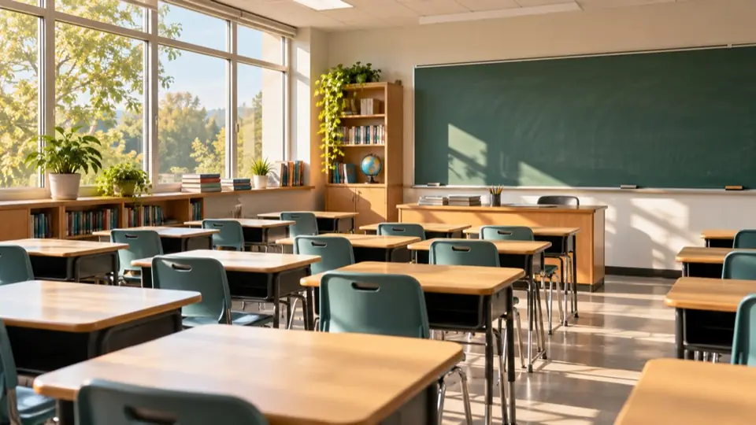
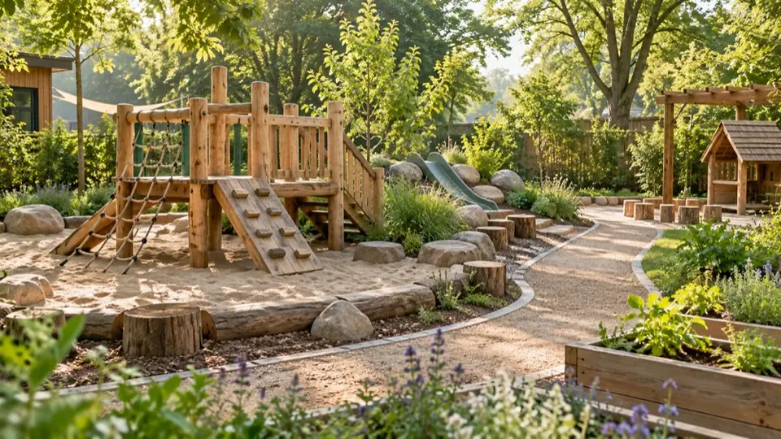

Школа «Открытие»
Проектные занятия, языковая практика и пространство для самостоятельных открытий.
420 000 ₽ / годПолный день
Найдите образовательную среду, в которой ребёнку будет интересно расти. Сравнивайте школы и детские сады в одном месте.

Начните с пространства, подхода и формата обучения.
Проектные занятия, языковая практика и пространство для самостоятельных открытий.
Камерная учебная среда с библиотекой, творческими занятиями и вниманием к интересам ребёнка.
Исследовательские проекты, естественные науки и английский язык в просторных светлых классах.
Гуманитарные предметы, творческие мастерские и проектная работа для подростков.
Места для игры, общения и первых самостоятельных решений.
Светлая игровая среда, занятия с природными материалами и первые шаги к самостоятельности.
Рисование, конструирование и свободная игра в небольших группах.

Уточните расписание, время для отдыха и то, как проходят занятия. На встрече попросите показать учебные пространства.

Узнайте, как устроены первые недели, как родители общаются с педагогами и что помогает ребёнку освоиться.
Определите удобный район, бюджет и подходящий режим дня. Затем сравните несколько вариантов и запланируйте знакомство с педагогами.
Состав услуг зависит от организации. Отдельно уточните питание, дополнительные занятия, учебные материалы и вступительные платежи.
Уточните размер групп, распорядок дня, подход к адаптации и способы общения с педагогами. Обсудите интересы ребёнка и ваши ожидания.